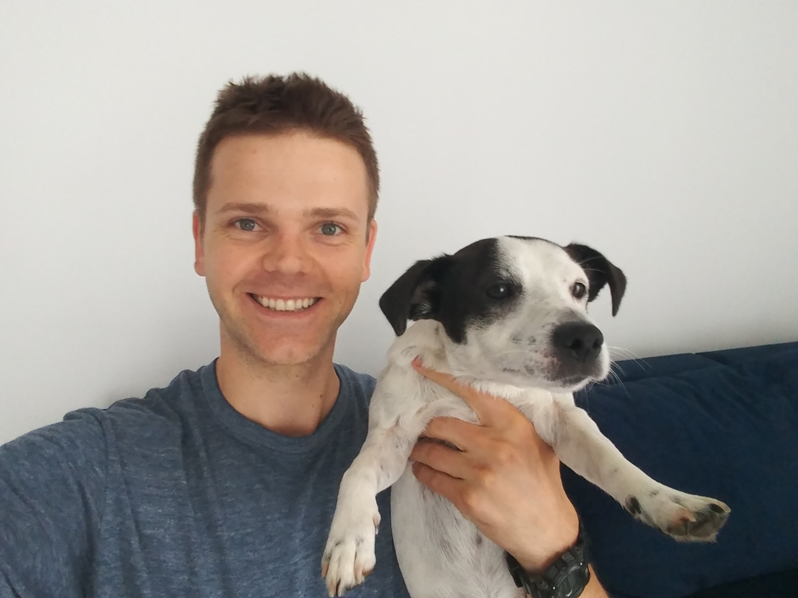

My story
I born in Nowy Sacz and lived there until finish high school. Then I started study in Cracow. I finished Cracow University of Technology, specialization Transport and Logistics Management, Eng. My first job was Logistician in middle local company. There I staid my first steps in reporting, data processing and coding. In 2014 I found new hobby, realized many diverse project as freelancer. After 4,5 years since I have started my first job I was hired in international company were my mian role was automation processes using VBA. Next few year brang huge busines and technical experiance. Also then I started C#, what i continuing until now...
Privately I am regular, normal guy. Over 30, married. I like actively spending time, long walks with my dog Tokio, hiking, going to gym, jogging. I am interested in motorisation and mechanical engineering. I also have motorcycle and love raiding on it.